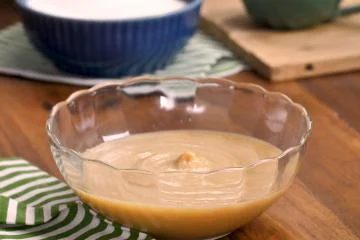

Doce de Leite – A Doçura Típica do Brasil

O doce de leite é uma das iguarias mais tradicionais da culinária brasileira, especialmente nas regiões de Minas Gerais e sul do país. Feito a partir da longa cocção do leite com açúcar, ele adquire uma textura cremosa e um sabor profundo e caramelizado. Esse doce irresistível é usado de diversas formas: como recheio de bolos, coberturas, para acompanhar queijos, ou simplesmente para ser apreciado puro, à colherada. Sua cor dourada e seu aroma inconfundível fazem do doce de leite um verdadeiro símbolo de indulgência e tradição.
Modo de Preparo do Doce de Leite
Ingredientes:
- 2 litros de leite integral
- 500 g de açúcar
- 1 pitada de bicarbonato de sódio (opcional, para evitar que o leite talhe)
Passo a Passo:
- Inicie a cocção: Em uma panela grande e de fundo grosso, coloque o leite e o açúcar. Leve ao fogo médio, mexendo constantemente até que o açúcar se dissolva completamente.
- Adicione o bicarbonato: Caso opte por usá-lo, adicione uma pitada de bicarbonato de sódio. Isso ajudará a evitar que o leite talhe durante o processo.
- Cozinhe lentamente: Reduza o fogo para baixo e deixe cozinhar, mexendo ocasionalmente para evitar que o doce grude no fundo da panela. Conforme o leite vai cozinhando, ele começará a engrossar e a adquirir um tom dourado.
- Atenção aos detalhes: À medida que o doce de leite atinge a cor desejada e a textura fica mais cremosa (depois de cerca de 1 a 2 horas), mexa constantemente para evitar que queime. A consistência final depende do gosto: mais líquida para coberturas ou mais firme para ser usado como recheio.
- MFinalização: Quando atingir o ponto ideal, retire do fogo e deixe esfriar em temperatura ambiente. O doce vai engrossar ainda mais conforme esfria.
Agora, é só aproveitar essa delícia, seja puro ou acompanhado!